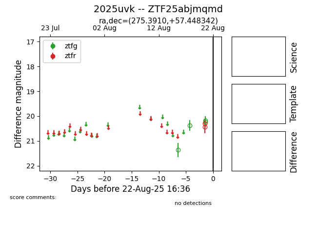

Target 2025uvk at 2025-08-22 16:36, see:
FINK: fink-portal.org/ZTF25abjmqmd
Lasair: lasair-ztf.lsst.ac.uk/objects/ZTF25abjmqmd
ALeRCE: alerce.online/object/ZTF25abjmqmd
TNS: wis-tns.org/object/2025uvk
YSE: ziggy.ucolick.org/yse/transient_detail/2025uvk
alt names
ZTF25abjmqmd (ztf,alerce)
2025uvk (tns,yse)
coordinates:
equatorial (ra, dec) = (275.3910,+57.44834)
galactic (l, b) = (86.3294,+26.52546)
photometry
